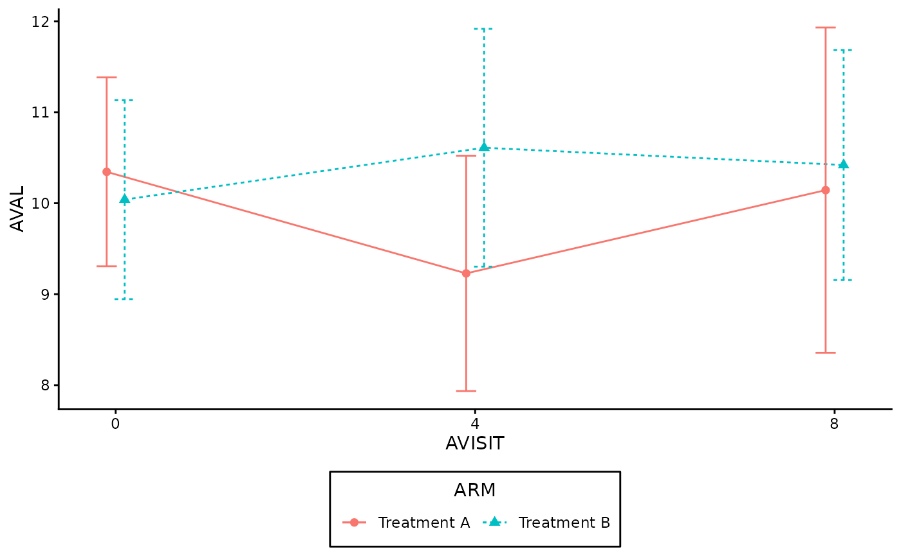
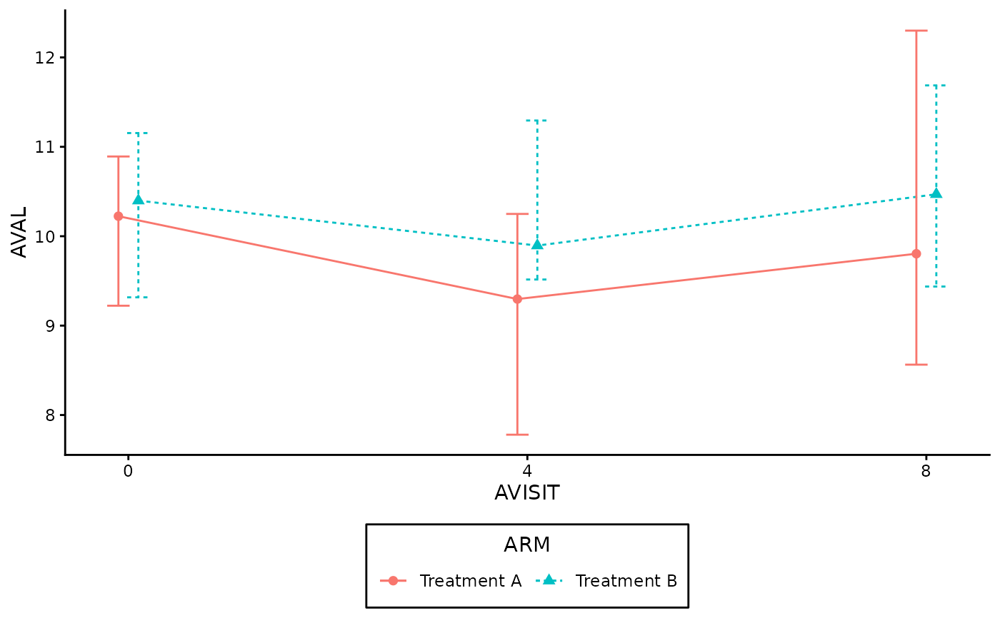
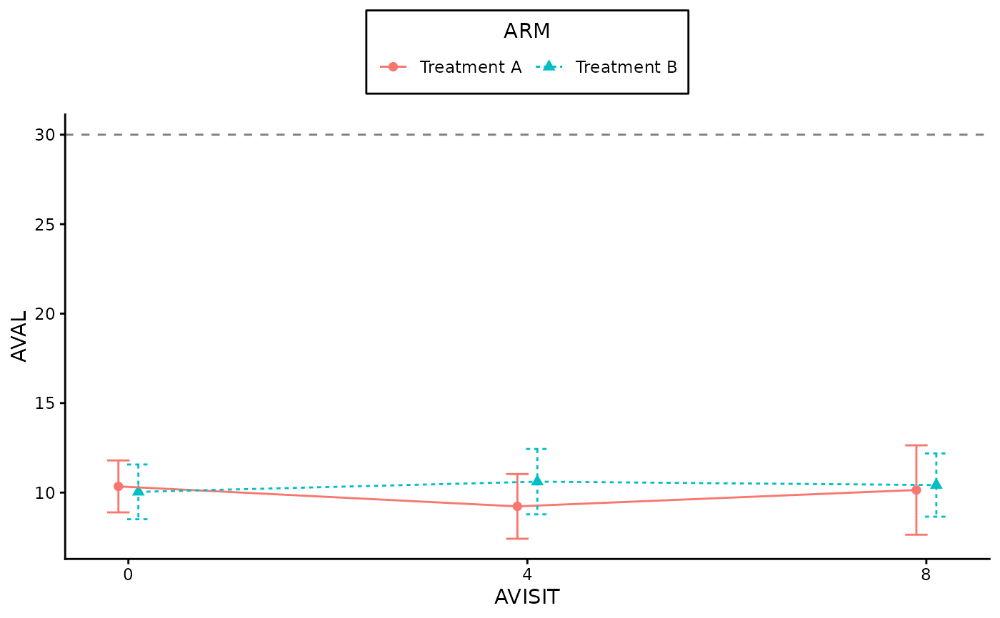

Calculates summary statistics inline using ggplot2::stat_summary(),
generating a line plot directly from raw data. Supports configurable central
tendencies and dispersion metrics.
(data.frame)
The raw data frame (e.g., ADaM dataset).
(tidy-select)
Column name for the x-axis timepoints (e.g., AVISIT).
(tidy-select)
Column name for the continuous variable to summarize (e.g., AVAL).
(tidy-select)
Optional column name for the grouping/treatment variable.
(string)
Primary summary statistic: "mean" or "median". Default is "mean".
(string)
Variability measure: "sd", "se", "ci", "iqr", or "none".
Default is "ci".
(numeric)
Confidence level for error bars when variability = "ci" (default: 0.95).
A ggplot object of class crane_gg_line.
annotate_lineplot_df() for related functionalities.
set.seed(123)
mock_adlb <- data.frame(
ARM = rep(c("Treatment A", "Treatment B"), each = 30),
AVISIT = rep(c(0, 4, 8), 20),
AVAL = rnorm(60, mean = 10, sd = 2)
)
# 1. Default Plot: Mean with 95% Confidence Intervals
gg_lineplot(
data = mock_adlb,
x = AVISIT,
y = AVAL,
group = ARM
)
#> ℹ We encourage to supply `x` as a factor, since it supports correct decimals
#> formatting in the summary table.

# 2. Median with Interquartile Range (IQR)
gg_lineplot(
data = mock_adlb,
x = AVISIT,
y = AVAL,
group = ARM,
stat = "median",
variability = "iqr"
)
#> ℹ We encourage to supply `x` as a factor, since it supports correct decimals
#> formatting in the summary table.

# 3. Ungrouped data with Mean and Standard Deviation +
# Change legend position to top and add horizontal reference line
gg_lineplot(
data = mock_adlb,
x = AVISIT,
y = AVAL,
group = ARM,
stat = "mean",
variability = "sd"
) +
ggplot2::theme(legend.position = "top") +
ggplot2::geom_hline(
yintercept = 30,
linetype = "dashed",
color = "gray50"
)
#> ℹ We encourage to supply `x` as a factor, since it supports correct decimals
#> formatting in the summary table.
